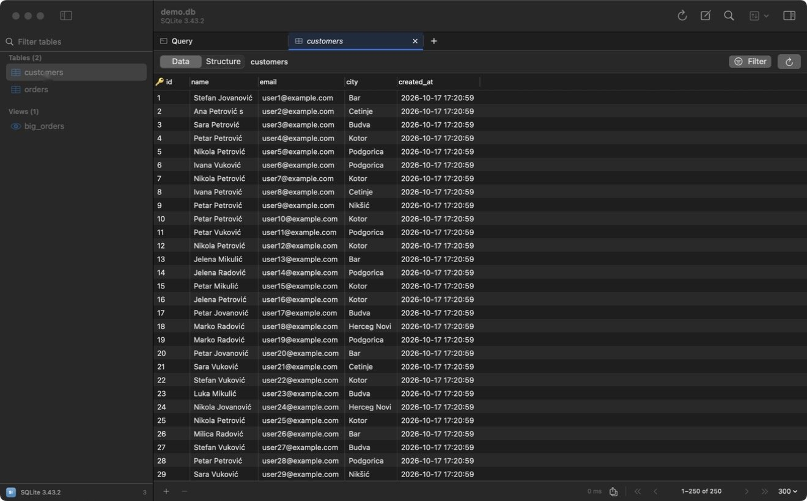

Browse tables
Each connection opens in its own window: objects on the left, tabs on the right, and a native grid that pages through the data on the server.

The sidebar
- Lists tables and views (PostgreSQL, MySQL, SQLite), collections (MongoDB), databases and keys (Redis) or indices (Elasticsearch).
- Type in Filter tables to narrow the list. Matching is fuzzy, so
orditfindsorder_items. - Right-click an object for Open in New Tab, Open Structure, New Query From Here, Import Data…, Export…, Copy Name, Truncate… and Drop….
Tabs
- Single click opens a table in a preview tab (italic title). The next single click replaces it.
- Double-click keeps the tab.
- + or ⇧⌘T opens an empty tab that the next table you pick fills. A tab with pending edits is never replaced.
- ⌘T opens a query tab. ⇧⌘W closes a tab. ⇧⌘] and ⇧⌘[ move between tabs.
- ⌘P (Open Anything) jumps to any table by name.
The grid
- Paging: rows load from the server one page at a time. Choose 100, 300, 500, 1000 or 5000 rows per page at the bottom right. ⌘] and ⌘[ go to the next and previous page.
- Sorting: click a column header. Click again to reverse.
- Selecting and copying: select rows (with ⇧ or ⌘ for several) and press ⌘C to copy them as tab-separated text, which pastes cleanly into Numbers or Excel.
- Refresh: ⌘R reloads the page.
- NULL is shown in grey italics, so you can tell it apart from an empty string.
Filter rows
Click Filter or press ⌥⌘F.
- Add a rule
Pick a column and an operator:
=,≠,<,>, contains, starts with, LIKE, IN, IS NULL and more. Type the value. Use + for more rules; every ticked rule must match. - Or write it yourself
The second line takes a raw filter in the engine's language: a SQL
WHEREclause, a MongoDB filter document like{ "status": "paid" }, a Redis key pattern likesession:*, or a Lucene query for Elasticsearch. - Apply
Click Apply. The button shows how many filters are active. Clear removes them.
Right-click a cell for quick filters such as "column = this value".
Foreign keys
On PostgreSQL, MySQL and SQLite, cells in a foreign-key column show a small arrow. Click it, or right-click ▸ Open table(column), to open the referenced table in a new tab filtered to that row. Composite keys work too. Hover a column header to see where its key points.
Row details and console
The right panel (⌥⌘0) has two views:
- Row (⌥⌘I): every field of the selected row with its type. Long values are easier to read and edit here.
- Console (⇧⌘L): every statement Tabulo ran for you, including the ones behind paging, filters and edits.